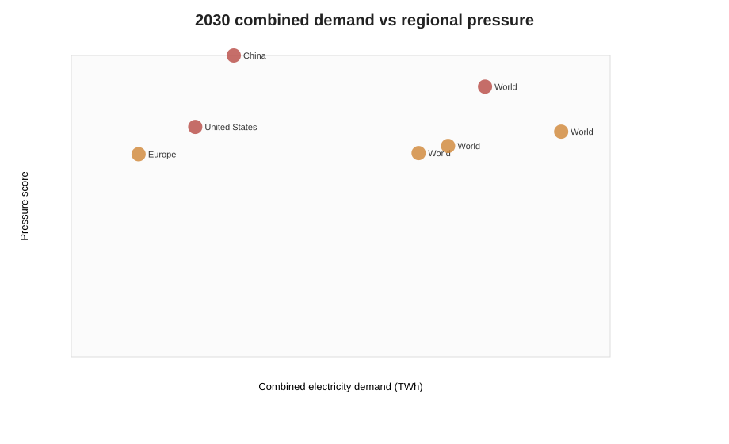
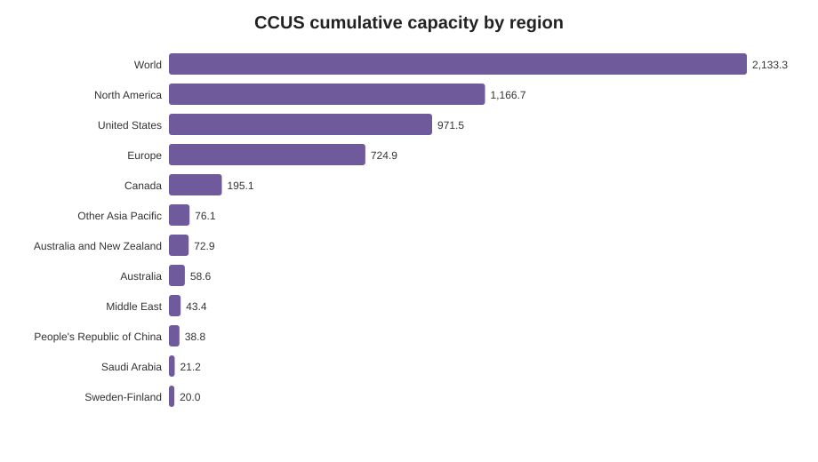
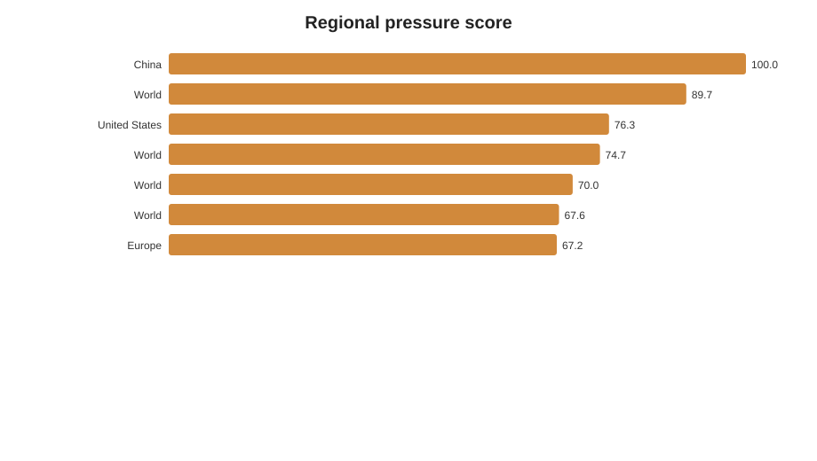
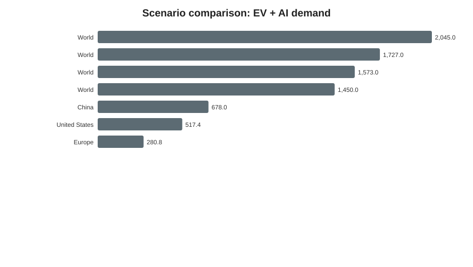

Database backendduckdb
Pipeline timestamp2026-06-10T22:34:32
Quality summaryPASS: 19
Regions4
Rows7
Max pressure100.0
Max demand TWh2045.0
Pressure Ranking
| Region | EV TWh | AI TWh | Combined TWh | CCUS buffer | Score | Class |
|---|---|---|---|---|---|---|
| China | 401.0 | 277.0 | 678.0 | 0.0 | 100.0 | Critical Pressure |
| World | 781.0 | 946.0 | 1,727.0 | 1,235,262.3 | 89.7 | Critical Pressure |
| United States | 91.4 | 426.0 | 517.4 | 1,877,612.6 | 76.3 | Critical Pressure |
| World | 781.0 | 1,264.0 | 2,045.0 | 1,043,177.5 | 74.7 | High Pressure |
| World | 781.0 | 792.0 | 1,573.0 | 1,356,197.1 | 70.0 | High Pressure |
| World | 781.0 | 669.0 | 1,450.0 | 1,471,240.0 | 67.6 | High Pressure |
| Europe | 167.8 | 113.0 | 280.8 | 2,581,326.8 | 67.2 | High Pressure |
Regional Clusters
| Region | Cluster | Pressure score |
|---|---|---|
| China | 2 | 100.0 |
| World | 1 | 89.7 |
| United States | 0 | 76.3 |
| World | 1 | 74.7 |
| World | 1 | 70.0 |
| World | 1 | 67.6 |
| Europe | 3 | 67.2 |
Research Links
Pressure ranking | CCUS buffer | Scenario comparison | Feature importance | Cluster scatter



